A high-speed, high-precision carrier transport solution for assembly and inspection lines. LMS coils, dedicated drives, and EtherCAT communication are all designed and manufactured in-house.
CSCAM Co., Ltd. has developed an outstanding transport system based on in-house technology spanning servo control, control communication, PLC integration, and operating software. The LMS system provides a flexible transfer environment, achieved through independent carrier drive with no direct physical contact.
Carrier transport is performed through the continuous operation of individual coils, while carrier position control is based on hall sensors at the entry point. Rather than a coil (motor), a magnet array is attached to and moves with the carrier — a structure that requires no separate external position-detection sensors.
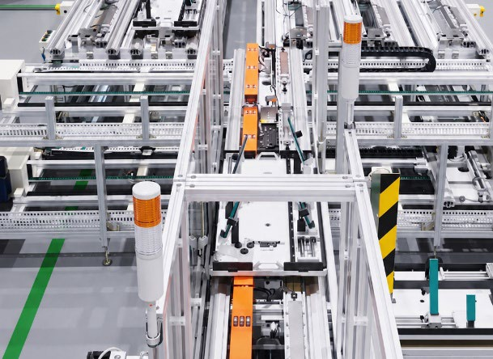
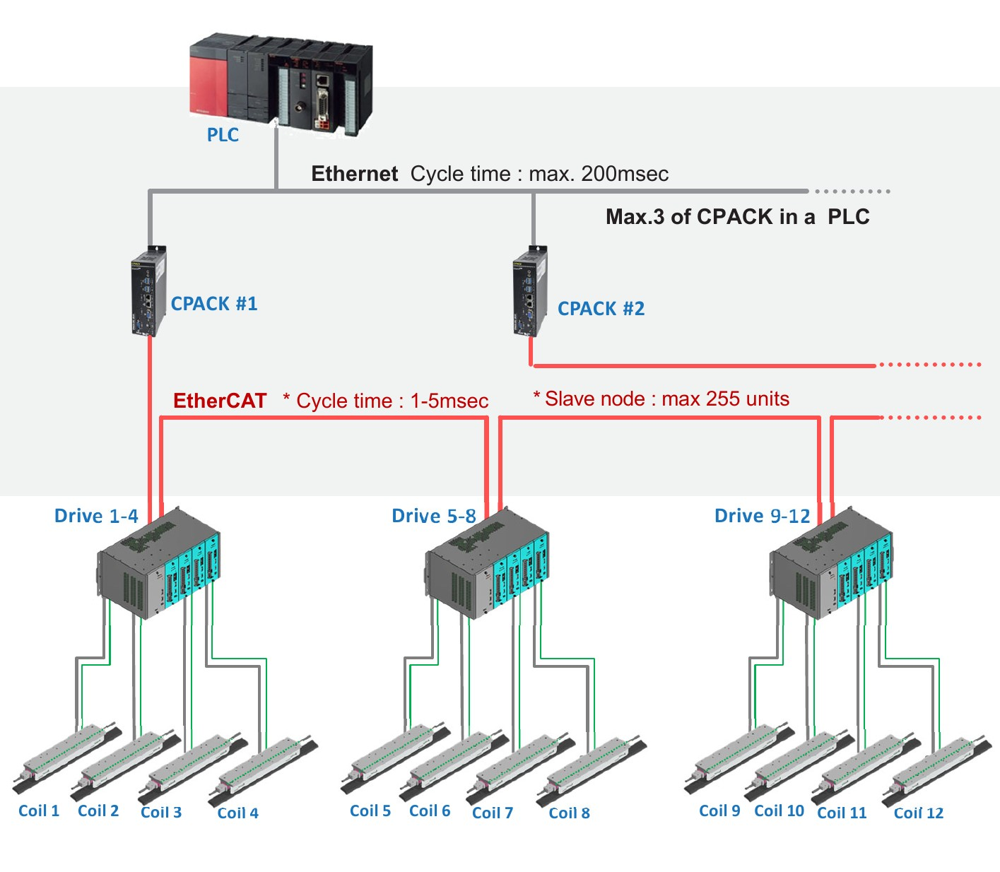
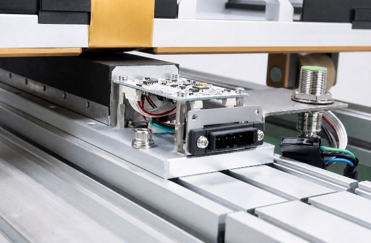
| Roller Guide | LM Guide | |
|---|---|---|
| Repeat Position Accuracy | ±0.05 ~ ±0.1 mm | ±0.005 ~ ±0.01 mm |
| Position Accuracy | ±0.1 ~ ±0.5 mm | ±0.01 ~ ±0.05 mm |
| Mechanical Characteristics | For smooth travel, elastic deformation of urethane or special-resin rollers and step differences between rails can cause some play | Very high rigidity from ball/roller rolling contact, with extremely little mechanical play |
| Application | Excellent cost-effectiveness for pure high-speed logistics sections; advantageous for high-speed travel; carrier-fixing mechanisms used in work sections | Installation cost increases with distance; excellent positioning accuracy; suitable for work performed while the carrier is stationary |
| Air Gap | Selected within 1~5mm; maintaining the air gap is critical to precision | Fixed within 1mm |
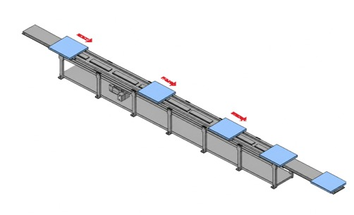
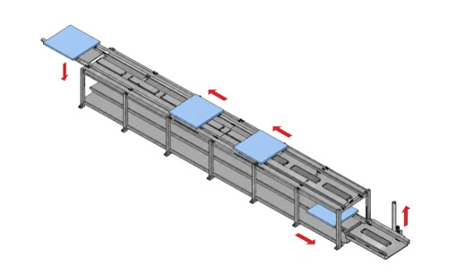
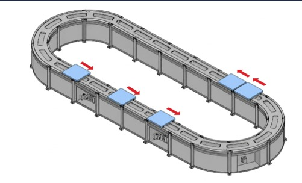
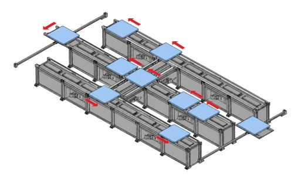
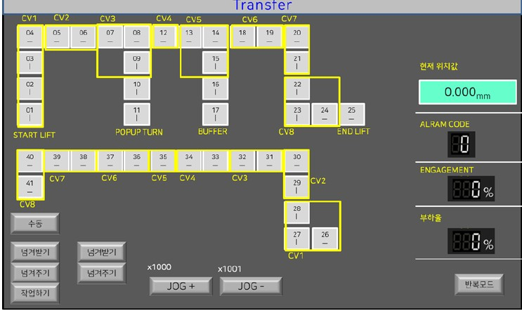
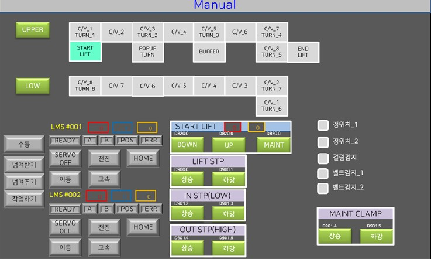
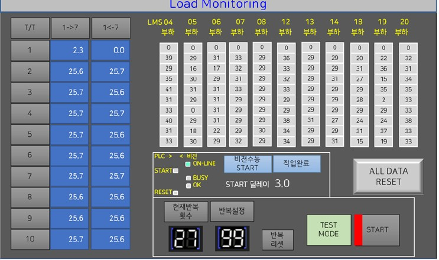
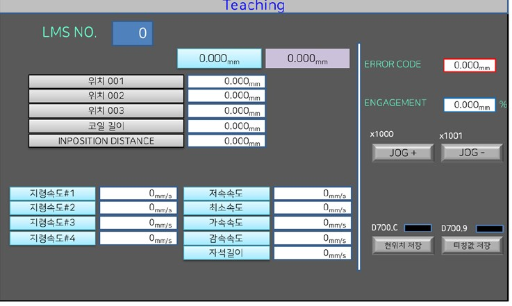
* The HMI shown represents a typical configuration and can be customized to match the layout and environment of the installed logistics line.
Enter transfer motion values to receive an optimal LMS Coil recommendation, and check the expected load ratio and cycle time.
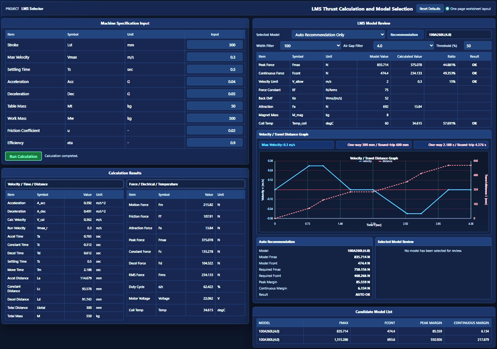
CSCAM manufactures and supplies all components in-house, including the LMS coil, dedicated drive, and EtherCAT Master SW. PLC control via general-purpose ladder logic makes it easy to interconnect and integrate with other processes. The LMS coil incorporates a dual hall sensor for precise position control. The coil is designed in a compact size optimized for heat dissipation. Redundant EtherCAT communication cabling handles communication line breaks, and a proprietary communication kernel allows for customization.
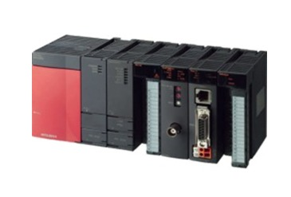
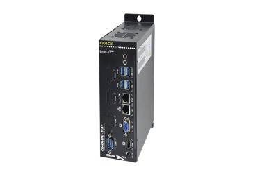
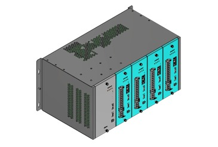
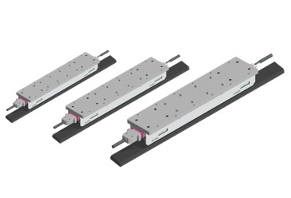
Coil model names follow the order <Linear Motion - Coil Width - Coil Length - Encoder Type>. Encoder Type is divided into A (Absolute), I (Incremental), and D (Dual Incremental).
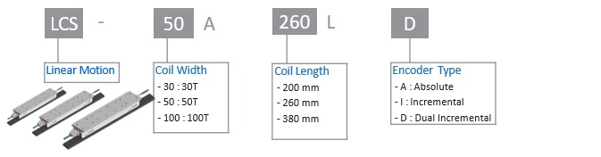
| SPEC | 30A196L | 30A260L | 30A260L-HJ | 50A200L | 50A260L | 50A380L | 100A260L | 100A380L |
|---|---|---|---|---|---|---|---|---|
| Force Continuous [N]* | 167 | 218 | 246 | 279 | 385 | 530 | 725 | 1,150 |
| Force Maximum [N] | 323 | 420 | 692 | 538 | 678 | 1,023 | 1,300 | 2,046 |
| Current Continuous [A rms] | 3.0 | 4.0 | 5.8 | 4.5 | 6 | 8 | 8.2 | 12 |
| Current Maximum [A rms] | 6.3 | 8.4 | 12 | 9 | 12 | 16 | 17.1 | 25 |
| Resistance [Ω] | 4.51 | 5.00 | 5.82 | 5.25 | 5.82 | 6.08 | 3.75 | 1.20 |
| Inductance [mH] | 28.62 | 20.59 | 30.30 | 30.02 | 21.60 | 32.40 | 35.00 | 35.60 |
| Attraction Force [N]* | 400 | 519 | 589 | 666 | 866 | 1,265 | 1,730 | 2,530 |
| Back EMF [V rms/m/sec] | 32.4 | 32.4 | 16.3 | 38 | 38 | 38 | 52 | 76 |
| Force Constant [N/A rms] | 56 | 55 | 42.4 | 62 | 64 | 66 | 75 | 88 |
| Capacity [W] | 300 | 400 | 400 | 400 | 750 | 1,300 | 3,000 | 3,000 |
| Recommended Drive | SD-04AFE | SD-04AFE | SD-04AFE | SD-04AFE | SD-10AFE | SD-15AFE | SD-30AFE | SD-30AFE |
| Max. Speed@Rated Force [m/sec] | 3 | 4 | 4 | 4 | 4 | 2.5 | 2 | 1 |
* Continuous/Attraction force [N] measured at a 2.5mm air gap. Encoder: Dual Encoder (BiSS-C), 16-bit resolution, semi-absolute. Product specifications and dimensions are subject to change for performance improvement.
Drive model names follow the order <Servo Drive Series - Capacity - Input Voltage - Encoder - Communication>. Capacity is divided into 04 (400W) / 10 (1.0kW) / 15 (1.5kW) / 20 (2.0kW) / 30 (3.0kW); Input Voltage into A (200V) / B (400V); Encoder is F (BiSS); Communication is E (EtherCAT).
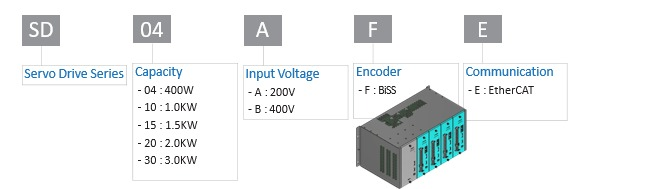
| SD SERIES | 04A | 10A | 15A | 20A | 30A |
|---|---|---|---|---|---|
| Motor Capacity [KW] | 0.4 | 0.75 | 1.3 | 2.0 | 3.0 |
| Rated Output Current [A] | 3.0 | 5.0 | 11.0 | 13.5 | 16.5 |
| Maximum Output Current [A] | 9.0 | 15.0 | 28.0 | 40.5 | 49.5 |
| Regenerative Resistor | Built-in | ||||
| Main Circuit [3 phases : AC200V] | AC200 ~ 230V +10 ~ -15% 50/60Hz | ||||
| Control Circuit [Single-phase : AC200V] | AC200 ~ 230V +10 ~ -15% 50/60Hz | ||||
CSCAM manufactures and supplies all components in-house, including the LMS coil, dedicated drive, and EtherCAT Master SW. PLC control via general-purpose ladder logic makes it easy to interconnect and integrate with other processes. The LMS coil incorporates a dual hall sensor for precise position control. The coil is designed in a compact size optimized for heat dissipation. Redundant EtherCAT communication cabling handles communication line breaks, and a proprietary communication kernel allows for customization.
Nine transfer lines were applied to a large OLED production transport line, including a section that carries a 1.5-ton carrier with a 15-tier stack of sub-pallets.
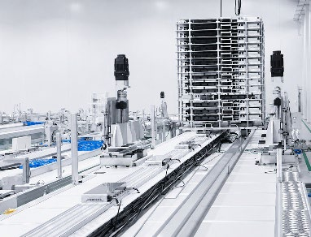
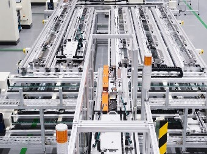
Using 150+ carriers and 400+ LMS coils, this line performs panel inspection, aging, machine-vision inspection, and visual inspection after LCD backlight bonding. Two lines installed.
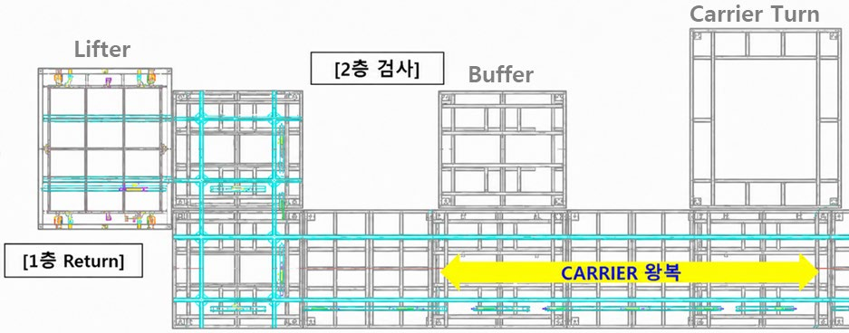
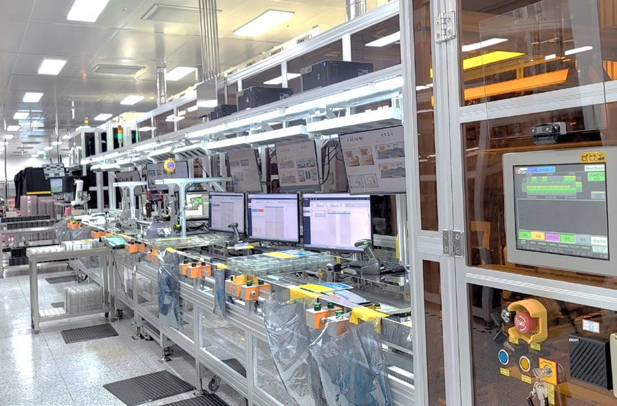
Using 20 carriers and about 30 coils per line, this line performs label attachment, visual inspection, machine-vision inspection, and screw fastening after LCD backlight bonding. Logistics flow is circular — inspection occurs on the upper level while empty carriers are returned on the lower level. Four lines built in total.
For LMS Linear Motion System configuration and quotes, please contact us using the information below.